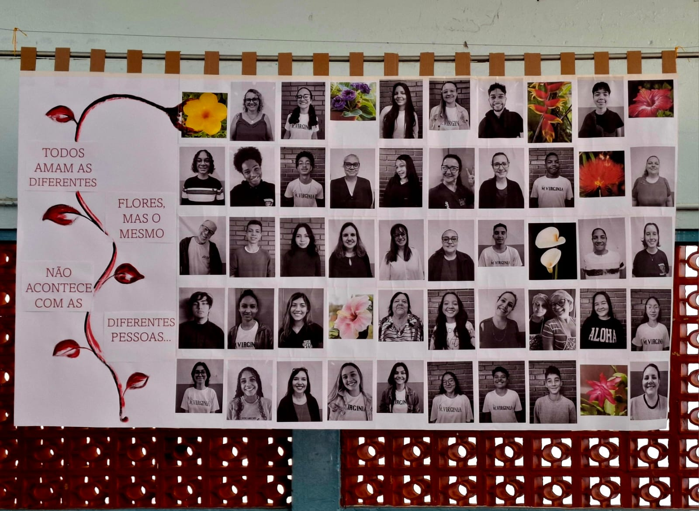

Mural: Bullying e Diversidade
08/09/2024 Na manhã do dia 13 de setembro, os alunos do ensino médio se reuniram para a elaboração de um painel onde é retratada a aceitação da diversidade e uma campanha contra o bullying. O mosaico consiste em fotos em preto e branco de alunos e funcionários da escola e, dentre essas fotos, foram colocadas imagens de flores de diferentes formas e cores. O intuito do projeto é realçar a diversidade brasileira e as facetas do seu povo, destacando, também, a miscigenação presente em nosso país e em nossa sociedade. O fato de as fotos estarem monocromáticas mostra como a cor da pele, do cabelo ou do olho não importam, assim como o peso ou a idade de alguém. A frase “Todos amam as diferentes flores, mas o mesmo não acontece com as diferentes pessoas” transcrita no painel, traz uma relação com a discriminação sofrida em situações de racismo, bullying e xenofobia, repensada em uma pequena poesia. Este painel foi exposto no meio do palco para que todos que passassem pelo pátio pudessem vê-lo e compreender a mensagem. De acordo com uma pesquisa feita no Reino Unido, 35% das vítimas de bullying passaram a faltar às aulas e 20% precisaram mudar de escola. Além do mais, o bullying se mostra ligado ao pensamento suicida nos jovens entre 11 e 16 anos. Nesse mês de combate ao suicídio, é importante manifestar o quão atual é esse problema dentro das escolas de todo o mundo.
"Todos amam as diferentes flores, mas o mesmo não acontece com as diferentes pessoas..."